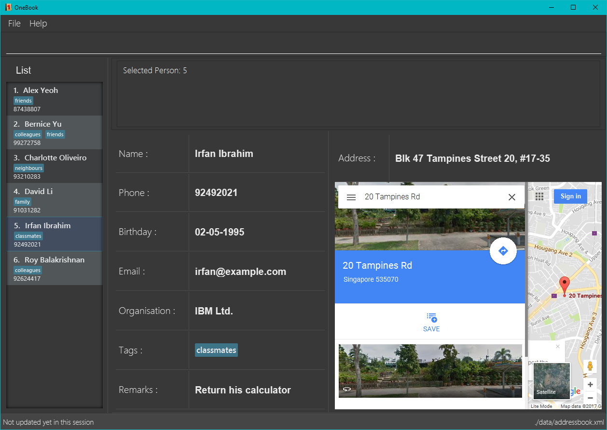

By: CS2103AUG2017 T17-B4 Since: Jun 2016 Licence: MIT
- 1. Product Overview
- 2. Quick Start
- 3. Features
- 3.1. Viewing help :
help - 3.2. Changing theme:
mode - 3.3. Adding a person:
add - 3.4. Listing all persons :
list - 3.5. Editing a person :
edit - 3.6. Locating persons:
find - 3.7. Deleting a person :
delete - 3.8. Selecting a person :
select - 3.9. Listing entered commands :
history - 3.10. Undoing previous command :
undo - 3.11. Redoing the previously undone command :
redo - 3.12. Clearing all entries :
clear - 3.13. Locating persons:
sort - 3.14. Importing a VCard file(.vcf) to OneBook :
import - 3.15. Exporting from OneBook to VCard file(.vcf) or CSV file(.csv) :
export - 3.16. Email to a person from Onebook contact list :
email - 3.17. Recycle Bin :
bin - 3.18. Restore entry from recycle bin :
restore - 3.19. Remove entry from recycle bin :
bindelete - 3.20. Clearing all recycle bin entries :
binclear - 3.21. Exiting the program :
exit - 3.22. Saving the data
- 3.23. Backup data
- 3.24. Remove all entry in recycle bin :
bin clear*Coming in v2.0 - 3.25. Import from CSV(.csv) files to OneBook :
import*Coming in v2.0 - 3.26. Email to a person from Onebook contact list via user’s default web browser:
email*Coming in v2.0
- 3.1. Viewing help :
- 4. FAQ
- 5. Command Summary
1. Product Overview
1.1. Introduction
OneBook is a desktop Address Book application. It uses a Graphical User Interface (GUI) but most of the interactions happen using Command Line Interface (CLI).
OneBook is optimized for companies' usage. It is also suitable for general usage.
OneBook allows users to easily import and export contacts, send emails conveniently and stores a database of contacts.
1.2. About
OneBook User Guide contains a detailed manual for using the application. The step-by-step instructions in this User Guide will assist you when using OneBook.
2. Quick Start
-
Ensure you have Java version
1.8.0_60or later installed in your Computer.Having any Java 8 version is not enough.
This app will not work with earlier versions of Java 8. -
Download the latest
addressbook.jarhere. -
Copy the file to the folder you want to use as the home folder for your Address Book.
-
Double-click the file to start the app. The GUI should appear in a few seconds.
 -
Type the command in the command box and press Enter to execute it.
e.g. typinghelpand pressing Enter will open the help window. -
Some example commands you can try:
-
list: lists all contacts -
addn/John Doe p/98765432 b/21-01-1995 e/johnd@example.com a/John street, block 123, #01-01: adds a contact namedJohn Doeto the Address Book. -
delete3: deletes the 3rd contact shown in the current list -
exit: exits the app
-
-
Refer to the Features section below for details of each command.
3. Features
Command Format
-
Words in
UPPER_CASEare the parameters to be supplied by the user e.g. inadd n/NAME,NAMEis a parameter which can be used asadd n/John Doe. -
Items in square brackets are optional e.g
n/NAME [t/TAG]can be used asn/John Doe t/friendor asn/John Doe. -
Items with
… after them can be used multiple times including zero times e.g.[t/TAG]…can be used ast/friend,t/friend t/familyetc. -
Parameters can be in any order e.g. if the command specifies
n/NAME p/PHONE_NUMBER,p/PHONE_NUMBER n/NAMEis also acceptable.
3.1. Viewing help : help
Format: help
3.2. Changing theme: mode
Changes the theme of OneBook between default mode and lite mode.
Format: mode
3.3. Adding a person: add
Adds a person to the address book
Format: add n/NAME [p/PHONE_NUMBER] [b/BIRTHDAY] [e/EMAIL] [a/ADDRESS] [o/ORGANISATION] [r/REMARK] [t/TAG]…
| A person can have any number of tags (including 0) |
| Fields that are enclosed by square brackets are optional. |
Examples:
-
add n/John Doe p/98765432 b/21-01-1995 e/johnd@example.com a/John street, block 123, #01-01 o/Apple Inc. r/Meeting for dinner tomorrow 6pm -
add n/Betsy Crowe t/friend e/betsycrowe@example.com a/Newgate Prison b/22-02-1998 p/1234567 t/criminal -
add n/Timothy Smith
3.4. Listing all persons : list
Shows a list of all persons in the address book.
Format: list
3.5. Editing a person : edit
Edits an existing person in the address book.
Format: edit INDEX [n/NAME] [p/PHONE] [b/BIRTHDAY] [e/EMAIL] [a/ADDRESS] [o/ORGANISATION] [r/REMARK] [t/TAG]…
Examples:
-
edit 1 p/91234567 e/johndoe@example.com
Edits the phone number and email address of the 1st person to be91234567andjohndoe@example.comrespectively. -
edit 2 n/Betsy Crower t/
Edits the name of the 2nd person to beBetsy Crowerand clears all existing tags.
3.6. Locating persons: find
Finds persons whose particular field contain any of the given keywords.
Format: find MAIN_KEYWORD KEYWORD [MORE_KEYWORDS]
Examples:
-
find name John
ReturnsjohnandJohn Doe -
find name Betsy Tim John
Returns any person having namesBetsy,Tim, orJohn -
find email johndoe
Returns any person having an email containingjohndoe -
find address Geylang Street 5
Returns only persons having an address containingGeylang Street 5 -
bin
find name Jake
Returns any person with the nameJake
3.7. Deleting a person : delete
Deletes the specified person(s) from the address book.
Format: delete INDEX, [MORE_INDEXES]
Examples:
-
list
delete 2
Deletes the 2nd person in the address book. -
list
delete 3, 4
Deletes the 3rd and 4th persons in the address book. -
find Betsy
delete 1
Deletes the 1st person in the results of thefindcommand.
3.8. Selecting a person : select
Selects the person identified by the index number used in the last person listing.
Format: select INDEX
Examples:
-
list
select 2
Selects the 2nd person in the address book. -
find Betsy
select 1
Selects the 1st person in the results of thefindcommand. -
bin
select 2
Selects the 2nd person in the recycle bin.
3.9. Listing entered commands : history
Lists all the commands that you have entered in reverse chronological order.
Format: history
|
Pressing the ↑ and ↓ arrows will display the previous and next input respectively in the command box. |
3.10. Undoing previous command : undo
Restores the address book to the state before the previous undoable command was executed.
Format: undo
|
Undoable commands: those commands that modify the address book’s content ( |
Examples:
-
delete 1
list
undo(reverses thedelete 1command) -
select 1
list
undo
Theundocommand fails as there are no undoable commands executed previously. -
delete 1
clear
undo(reverses theclearcommand)
undo(reverses thedelete 1command)
3.11. Redoing the previously undone command : redo
Reverses the most recent undo command.
Format: redo
Examples:
-
delete 1
undo(reverses thedelete 1command)
redo(reapplies thedelete 1command) -
delete 1
redo
Theredocommand fails as there are noundocommands executed previously. -
delete 1
clear
undo(reverses theclearcommand)
undo(reverses thedelete 1command)
redo(reapplies thedelete 1command)
redo(reapplies theclearcommand)
3.12. Clearing all entries : clear
Clears all entries from the address book, including the recycle bin
Format: clear
3.13. Locating persons: sort
Sorts the list in OneBook according to name or email in alphabetical order.
Format: sort [KEYWORD]
Examples:
-
sort name -
sort email -
bin
sort name
Sorts the recycle bin entries in alphabetical order of their name.
3.14. Importing a VCard file(.vcf) to OneBook : import
Import a VCard file from directory to OneBook
Format: import [file directory]
Examples:
-
import C:\Users\User\Desktop\contacts.vcf(Windows) -
import C:\Users\User\Downloads\contacts.vcf(Windows) -
import /Users/user/Downloads/contacts.vcf(MAC OSX) -
import /Users/user/Desktop/contacts.vcf(MAC OSX)
3.15. Exporting from OneBook to VCard file(.vcf) or CSV file(.csv) : export
Create a VCard file or CSV File and export from OneBook to the file directory
Format: export [file directory(including filename and file extension)]
Examples:
-
export C:\Users\User\Desktop\contacts.vcf(Windows) -
export C:\Users\User\Downloads\OneBook.vcf(Windows) -
export /Users/user/Downloads/contacts.vcf(MAC OSX) -
export/Users/user/Desktop/OneBook.vcf(MAC OSX) -
export C:\Users\User\Downloads\OneBook.csv(Windows) -
export /Users/user/Downloads/contacts.csv(MAC OSX)
3.16. Email to a person from Onebook contact list : email
Emails to the person selected from Onebook contact list
Format: email [Index]
Examples:
-
email 1 -
email 3
3.17. Recycle Bin : bin
Shows a list of deleted persons.
Format: bin
3.18. Restore entry from recycle bin : restore
Restore the specified person from the bin to the address book.
Format: restore INDEX, [MORE_INDEXES]
Examples:
-
bin
restore 2
Restores the 2nd person in recycle bin to the address book.
3.19. Remove entry from recycle bin : bindelete
Remove the specified person from the bin.
Format: bindelete INDEX, [MORE_INDEXES]
Examples:
-
bin
bindelete 2
Removes the 2nd person in recycle bin.
3.20. Clearing all recycle bin entries : binclear
Clears all entries from the recycle bin.
Format: binclear
3.21. Exiting the program : exit
Exits the program.
Format: exit
3.22. Saving the data
Address book data are saved in the hard disk automatically after any command that changes the data.
There is no need to save manually.
3.23. Backup data
OneBook will automatically create a backup copy whenever the application is started.
If the application checks that the main data file is corrupted, it will load the backup file.
If the backup file does not exist or is corrupted too, OneBook will start with a sample AddressBook data.
3.24. Remove all entry in recycle bin : bin clear *Coming in v2.0
Clears the recycle bin.
Format: binclear
3.25. Import from CSV(.csv) files to OneBook : import *Coming in v2.0
Import a CSV file from directory to OneBook
Format: import [file directory]
3.26. Email to a person from Onebook contact list via user’s default web browser: email *Coming in v2.0
Emails to the person selected from Onebook contact list via user’s default web browser
Format: email [email website] [Index]
4. FAQ
Q: How do I transfer my data to another Computer?
A: Install the app in the other computer and overwrite the empty data file it creates with the file that contains the data of your previous Address Book folder.
Q: Why do I keep getting unknown command when typing a command?
A: The command typed is invalid. Refer to Command Summary section for all the commands.
Q: After entering list command, why do I not get any contact list?
A: You might not have added at least one person to Onebook. Add at least one person to Onebook and try running the command again.
Q: Why does it link to Windows mail or MACOS mailand not microsoft outlook when I type email command?
A: Your default mail application might be windows mail, not microsoft outlook. Go to settings to change your default mail application to your preference.
Q: I have 500 contacts to import. When I use import command, only 490 contacts are imported.
A: You might have duplicated contacts in the list which are not imported.
Q: How do I unfilter my currently displayed list?
A: Depending on which list you are in. In the contact list, enter list command. In the recycle bin, enter bin command.
Q: How do I switch back to contact list after I switch to recycle bin?
A: Use the list command.
5. Command Summary
-
Help :
help -
Mode :
mode -
Add
add n/NAME p/PHONE_NUMBER b/BIRTHADAY e/EMAIL a/ADDRESS [t/TAG]…
e.g.add n/James Ho p/22224444 b/18-04-1995 e/jamesho@example.com a/123, Clementi Rd, 1234665 t/friend t/colleague -
Clear :
clear -
Delete :
delete INDEX, [MORE_INDEXES]
e.g.delete 3, 4, 5 -
Edit :
edit INDEX [n/NAME] [p/PHONE_NUMBER] [b/BIRTHDAY] [e/EMAIL] [a/ADDRESS] [t/TAG]…
e.g.edit 2 n/James Lee e/jameslee@example.com -
Find :
find MAIN_KEYWORD KEYWORD [MORE_KEYWORDS]
e.g.find name James Jake
e.g.find phone 123456789 -
Import :
import [file directory]
e.g.import C:\Users\User\Desktop\contacts.vcf(Windows)
e.g.import /Users/user/Downloads/contacts.vcf(MAC OSX) -
Export :
import [file directory]
e.g.export C:\Users\User\Desktop\contacts.vcf(Windows)
e.g.export /Users/user/Downloads/contacts.vcf(MAC OSX)
e.g.export C:\Users\User\Desktop\contacts.csv(Windows)
e.g.export /Users/user/Downloads/contacts.csv(MAC OSX) -
Email :
email INDEX
e.g.email 2 -
List :
list -
Select :
select INDEX
e.g.select 2 -
Sort :
sort KEYWORD
e.g.sort name
e.g.sort email -
History :
history -
Undo :
undo -
Redo :
redo -
Recycle Bin :
bin -
Restore :
restore INDEX
e.g.restore 2, 3, 4 -
Bin Delete :
bindelete INDEX
e.g.bindelete 2, 3 -
Clear Recycle Bin :
binclear